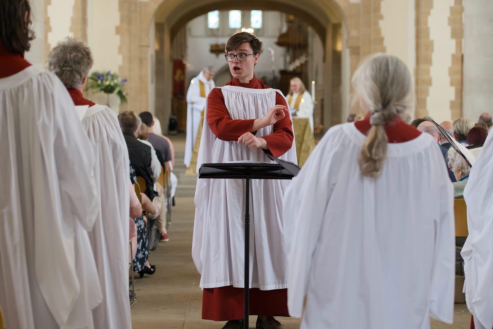
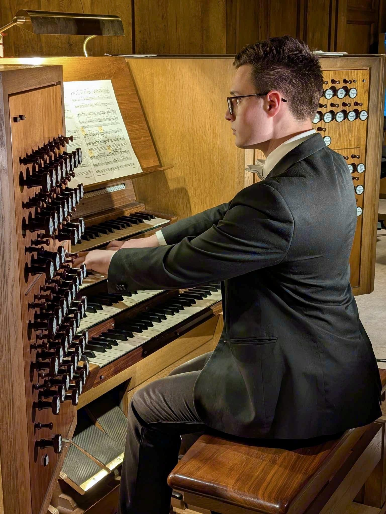
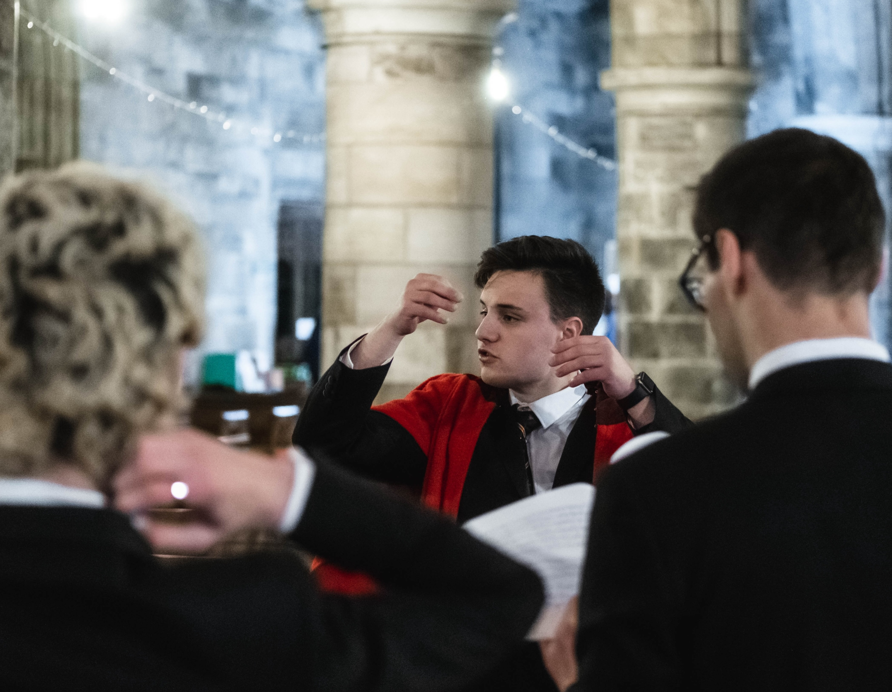

Music
Organist · Choral Conductor · Accompanist

Michael Chamberlain is an organist, choral conductor, accompanist and composer based in London and Milton Keynes. He is currently Organ Scholar at Southwark Cathedral, having previously served as Organ Scholar at Portsmouth Cathedral and at The Portsmouth Grammar School. Prior to this, he held the Organ Scholarship at the University of St Andrews, where he read Mathematics.

Organ
Michael has extensive experience as a cathedral and collegiate organist. Alongside supporting the regular pattern of worship at Southwark, Portsmouth, and St Andrews, he has accompanied choirs on visits to Christ Church Oxford, Lincoln Cathedral, St Giles’ Cathedral Edinburgh, Gloucester Cathedral, Leeds Minster, and St Albans Cathedral, as well as further afield at Bourges Cathedral, France, and Lund Cathedral, Sweden. Michael is an Associate of the Royal College of Organists.
His playing has also been broadcast on BBC One Scotland as accompanist to St Salvator’s Chapel Choir in Christmas Celebration 2024. During 2026–27 he will give termly organ recitals at Southwark Cathedral.
View full repertoire →Conducting
Michael enjoys conducting choirs of all ages. While at Portsmouth, Michael regularly directed the Cathedral Consort and occasionally directed the Cathedral Choir. He also managed and occasionally directed the Chamber Choir of The Portsmouth Grammar School. While an undergraduate at St Andrews, Michael directed the St Andrews Madrigal Group between 2023 and 2025.
